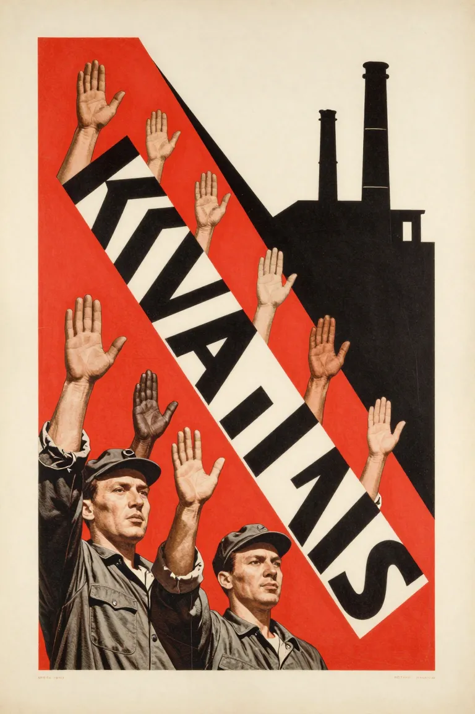

Utklipte fotografier limes sammen med tegnede former og stor type, og kopieres så ved fotolitografi eller rasterklisjeer i to til fire flate farger. Diagonalene, de røde og sorte blokkene og de grotesk-skrevne versalene kommer fra montasjen og den rene fargen.

Kjerneidé
En plakat laget av ekte fotografier, satt på sterke diagonaler og trykket i noen få harde farger, taler som et faktum og ikke som et bilde.
Designprinsipper
Skjær hvert fotografi til en hard kant og lim det på layouten; ikke tone det ut eller blend det.
Sett hovedaksen på en diagonal på 15 til 45° og la figurene lene seg langs den.
Skift målestokken på fotografiene kraftig: et ansikt så stort som arket ved siden av en mengde så liten som en tommel.
Bruk 2 til 4 flate farger: rødt, sort, kremfarget papir og i noen ark oker. Legg det røde i blokker og kiler.
Lag fotografiene med et grovt raster på 50 til 80 linjer per tomme, slik at de trykker på billig papir.
Sett slagordet med tunge grotesk-versaler, i rødt eller sort, og gi det en egen blokk.
Bruk geometriske former (sirkel, stang, kile) som rammer og pekere, og ikke bruk ornament.